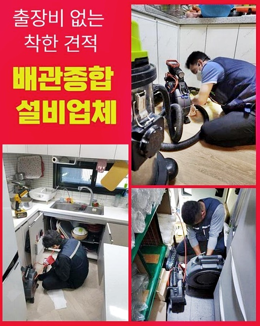
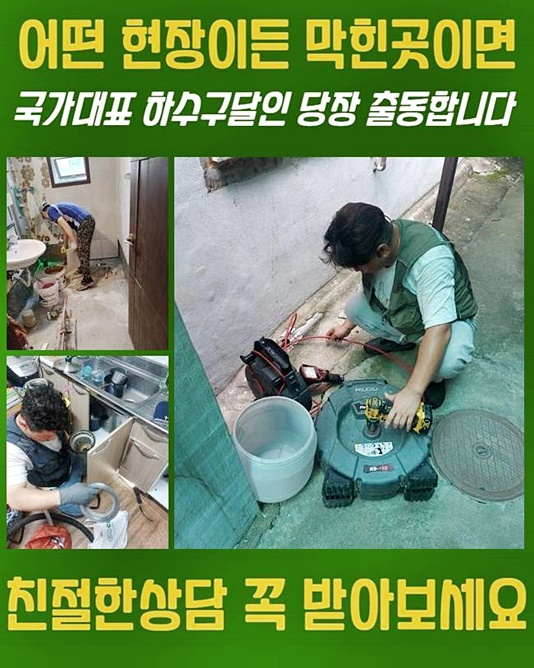
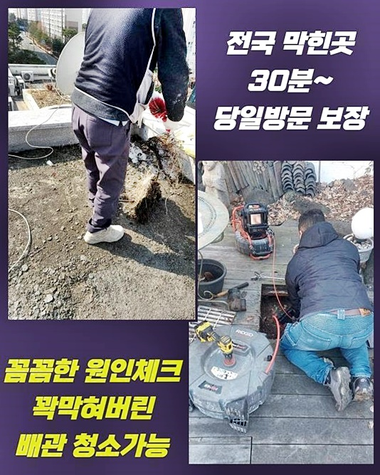
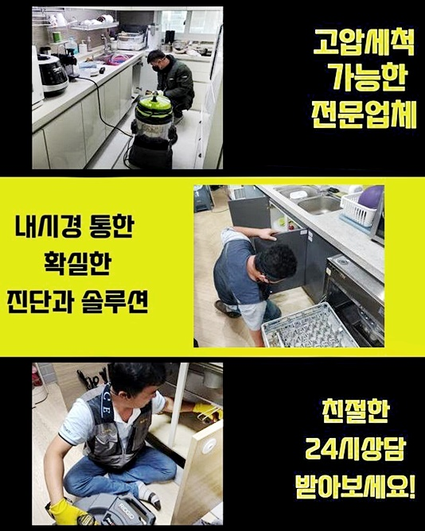
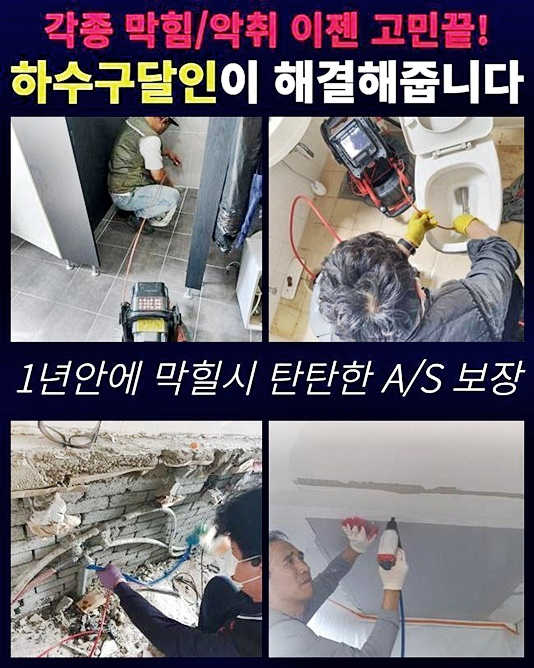
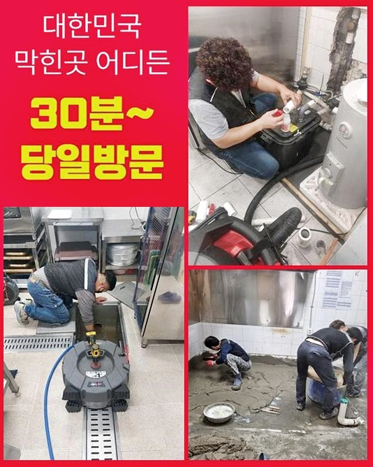
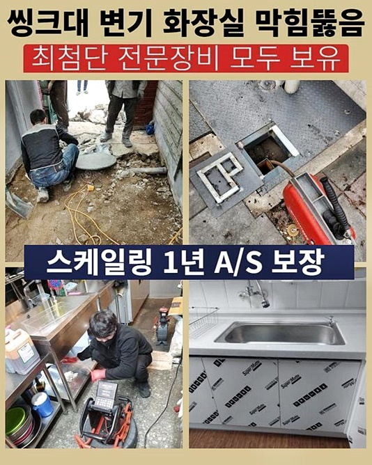

🏠 부천 소사본동싱크대배수관막힘 송내동 배관내시경카메라 설비업체
용인시 처인구 배관막힘 전문 시공 후기

📋 작업 개요
- 위치: 용인시 처인구, 수원시 영통구, 화성시 동탄
- 서비스 유형: 배관막힘, 고압세척, 내시경점검
- 작업 일시:
- 업체명: 하수구수사대 (010-5615-2118)
🔍 문제 상황
부천 소사본동싱크대배수관막힘 송내동 배관내시경카메라 설비업체
불특정 다수가 사용하는 건물에서 배수장애가 생겨나는 바람에 내방을 해보았는데요
도착하니 물솟음이 야기되었고 바닥쪽엔 오수들로 악취까지 발생했다 말씀해주셨어요
이대로 방임한다면 상황은 수렁으로 빠지기에 신속히 작업할 목적으로 달려간 현장을 같이 볼 예정인데요
저희전문진은 신속한 세척과 청소를 진행하여 여러분을 도와드립니다
뚫지못하면 수리비도 받고있지 않고 있으므로 문제 발생 시 반드시 해결해내는 저희들께 문의하십니다
처음엔 내시경기기로 내측까지 파악하는 것이 각별히 신경써야할 점이죠 협소한 배관을 관찰할땐 내시경이 필요합니다
내시경기기의 머리부에는 카메라들이 있어서 장소불문 심층부까지 선명히 확인케하죠
내시경으로 확인하니 내부는 붉은 형태로 된걸 알 수 있었는데 이것이 기름들이라고 보면 되죠
이러한 모습은 통수공간이 전혀 없는 상태인데요
해당 문제들은 각 라인에서 흐르는 잔해물이 메인으로 모이게되면서 잔해도 축적되기에 다량이 축적될 시 증세는 나타납니다
배수장애가 생겨나면 여러방면에서 피해가 생기는 수 밖에 없는데요
많은 인원이 사용해야되는 시설이라면 관리를 잘하고 청결하게 세척하며 쓰여져야 증세가 발생치 않고 오래도록 사용가능하죠

🔎 원인 분석
💡 전문가 진단: 정밀 진단 장비를 사용하여 슬러지의 고착 여부를 판명하고 타격/세척 작업을 실시했습니다.
식용유 등을 쏟아내거나 식료품 혹은 여타 물건들을 배출시키는 등 막혀버리는 문제를 야기하는 이물들을 투입시키지않고서 조심해주시면 해당 사안처럼 불상사가 발발하지 않겠습니다
육안으로 사태를 파악해도 심한 기능저하를 보였고 흡착물들도 많았던 모습을 띄고 있었죠
시발점을 찾으려고 트랩쪽을 걷어내고 구석구석 살피면서 수직배관 끝에도 관찰해봤죠
원인에 대한 규명을 빈틈없이 못할 시 추후의 세척도 의미없다 생각하시면 됩니다 눈여겨봐야할 것은 증세를 없애는것에 있으나 세척과정을 거쳐 똑같은 증상이 발생되지 않는것 또한 중요하겠습니다
육안의 증세만 일단락 시키고 가는것이 아닌 지속적으로 사용하며 문제들이 발생되지않아야 고객의 만족자체가 올라가죠
이 장소는 관리책 실시가 확실하게 행해지지 못한 현장이였고 위생적이지 못하게 관리된걸 인지했어요
막혀버리는 증상이 잦거나 쉽게 고쳐지지않으면 점검등을 수행하지않은 현장의 가능성이 큽니다
다수가 이용하시기때문에 관리적측면을 때때로 관찰했어야 됐지만 인지를 못하신 것으로 파악되었어요
개별적인 관로가 막혔다면 대다수가 특정부위의 장애라고 알고계시지만 그와 반대로 축적이 이뤄지다보면 각각의 세대별로 증세를 불러일으켜요
이럴땐 경제적 지출도 상승하고 투입되는 기간까지 늘어나는 바람에 고객분의 불편은 상당히 커져요
저희업체에게 불편에 대한 설명을 하셨는데요
보통 음식을 변기내부로 버리시기도 하고 기름들도 주방 배수구에 버리십니다
기름의 경우 씽크대에 버리면 추후에 증상이 생겨나게되고 닦아주어 워싱을 해줘야되겠습니다

🔧 작업 과정
저희전문진은 위같은 한번 작업들을 해드리고 끝내는것이 아닌 일년동안에 무상수리를 지원하기때문에 고객께서 불안해하지않고서 사용할 수 있겠다고 감사를 표하시기도 해요
저희업체는, 해결을 해내는게 1순위이나 과정들이 그만큼 중요한것으로 여기므로 전문적인 장치를 이용하고 있답니다
일단 내시경기기를 대표로해서 석션장비와 샤프트기이죠 배관 청소 시에 요구됩니다
샤프트기는 머리쪽이 노커체인으로 자리하고 있어서 딱딱한 잔해를 제거시키는데 효과를 보이는 장비죠
고착물들과 흡착된 기름들도 세척해줘요
이외에 석션장치는 흡입기능을 담당하며 하수들을 세척시킵니다
작업 시 빨아당겨 뚫어내는게 목적이라 완성도 또한 좋습니다 가정에서 이용하는 청소기제품과 동일한 원리로 작용한다고 생각하시면 되죠
철저하게 청소해주기 위해선 작업의 과정들이 중요하겠습니다 배수장애의 원인들을 확실히 없애주고 재발될 수 없도록 조치해야해요
오랫동안 내식성이 저하된것이 보여졌고 세척하기에도 쉽지 않았습니다
이런 문제의 경우 뚫는것에만 초점을 맞추지않고 높은 수압으로 청소도 오차없이 진행되어야 원래처럼 미래에 문제도 야기되지 않겠죠?
고압수청소 기기는 라인을 부착시켜서 하수관으로 삽입하여 청소를 이행시킵니다
물들로 인해만 깔끔한 하수도를 형성하기에 위험없이 이용될 수 있는 장비죠
이런저런 이물들을 세척들을 해주는 역할들을 하게됩니다
청결하게하는 기능도 수행하므로 만족도들은 상승하죠
전문진마다 수리하는 방법은 각자 상이하단건 자명하나 눈여겨 봐야할 건 작업 이후에 재발하는 사태가 되느냐 안 되느냐의 사항들로 생각해보시면 되요
저희업체는 다양한 경험으로 해결책들을 숙지했고 저희의 경우 빠른 방문덕에 신속하게 조치들을 해냅니다
지역적 한계없이 1시간안팎으로 방문드리는 것이 이뤄지고 있기에 필요로 하시는 의뢰인이 상당수 늘어나고 있어요
막힘이 목격되면 여러분들이라면 곤경에 처하게 되고 서둘러서 해결해줘야겠다는 생각이실텐데요
저희들이 작업을 하고서 그저 나몰라라하지 않고 1년의 시간에 걸쳐 AS를 지원하니 안전하게 계셔도 좋아요
주민끼리 올바른 규칙들을 준수하면서 지내시면 문제 발생은 나타나지 않을 수 있어요
일부 세대만의 문제들이 아닌 까닭에 여러명이 협업하여 관리를 해주어야 됩니다


✅ 작업 완료
일부라도 어떠한 결함이 생기면 금일의 장소처럼 메인관로의 오류가 됩니다
그래서 징후가 발생되면 전문가를 찾아야겠습니다
가정에서의 문제의 경우 해결할 목적으로 약품들만 사시는 분들도 자주 보입니다
해당 방식들이 소용이 없다라는건 아니나 사용 후 큰 효과가 없다면 심층부에서부터 이물이 축적된 경우가 많아 이왕이면 전문가들의 해결책을 통해 시정해야하죠
작업이 끝나면 내시경기기로 내측을 들여다보고 제대로 배수장애가 해결되면 철수합니다
미해결된 현장이라면 비용들을 청구하지 않고있으니 편하게 찾아주세요!




⚠️ 하수구 배관 막힘 예방 및 관리 가이드
- ✅ 머리카락, 비닐, 물티슈 등 물에 분해되지 않는 이물질은 절대 흘려보내지 마세요.
- ✅ 기름기 많은 식기는 설거지 전 키친타올로 먼저 기름때를 닦아내세요.
- ✅ 주기적으로 배수구에 뜨거운 물을 가득 부어주어 유지방 고착을 방지하세요.
- ✅ 작업 후 1년 이내 재발 시 무상 A/S 보증 서비스를 제공합니다.
💡 핵심 정리
- 확실한 장비 작업(내시경 점검 및 샤프트 스케일링)으로 원인을 뿌리 뽑습니다.
- 작업 후 1년 이내에 동일한 부위 재발 시 100% 무상 A/S 서비스를 보장합니다.
- 서울 · 경기 · 인천 전 지역에 24시간 언제든 긴급 출동할 수 있도록 항시 대기 중입니다.
❓ 자주 묻는 질문 (FAQ)
🚨 용인시 처인구 배관막힘 문제로 고민이신가요?
정확한 원인 진단과 확실한 시공으로 재발 없는 해결을 약속드립니다.
24시간 긴급 출동 | 서울 · 경기 · 인천 전지역 | 1년 내 재발 시 무상 A/S